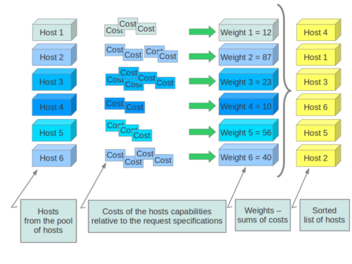

Filter Scheduler¶
The Filter Scheduler supports filtering and weighting to make informed decisions on where a new instance should be created. This Scheduler supports only working with Compute Nodes.
Filtering¶

During its work Filter Scheduler firstly makes dictionary of unfiltered hosts, then filters them using filter properties and finally chooses hosts for the requested number of instances (each time it chooses the most weighed host and appends it to the list of selected hosts).
If it turns up, that it can’t find candidates for the next instance, it means that there are no more appropriate hosts where the instance could be scheduled.
If we speak about filtering and weighting, their work is quite flexible in the Filter Scheduler. There are a lot of filtering strategies for the Scheduler to support. Also you can even implement your own algorithm of filtering.
There are some standard filter classes to use (nova.scheduler.filters):
AllHostsFilter - frankly speaking, this filter does no operation. It passes all the available hosts.
ImagePropertiesFilter - filters hosts based on properties defined on the instance’s image. It passes hosts that can support the specified image properties contained in the instance.
AvailabilityZoneFilter - filters hosts by availability zone. It passes hosts matching the availability zone specified in the instance properties. Use a comma to specify multiple zones. The filter will then ensure it matches any zone specified.
ComputeCapabilitiesFilter - checks that the capabilities provided by the host compute service satisfy any extra specifications associated with the instance type. It passes hosts that can create the specified instance type.
The extra specifications can have a scope at the beginning of the key string of a key/value pair. The scope format is scope:key and can be nested, i.e. key_string := scope:key_string. Example like capabilities:cpu_info: features is valid scope format. A key string without any : is non-scope format. Each filter defines it’s valid scope, and not all filters accept non-scope format.
The extra specifications can have an operator at the beginning of the value string of a key/value pair. If there is no operator specified, then a default operator of s== is used. Valid operators are:
* = (equal to or greater than as a number; same as vcpus case)
* == (equal to as a number)
* != (not equal to as a number)
* >= (greater than or equal to as a number)
* <= (less than or equal to as a number)
* s== (equal to as a string)
* s!= (not equal to as a string)
* s>= (greater than or equal to as a string)
* s> (greater than as a string)
* s<= (less than or equal to as a string)
* s< (less than as a string)
* <in> (substring)
* <all-in> (all elements contained in collection)
* <or> (find one of these)
Examples are: ">= 5", "s== 2.1.0", "<in> gcc", "<all-in> aes mmx", and "<or> fpu <or> gpu"
- AggregateInstanceExtraSpecsFilter - checks that the aggregate metadata satisfies any extra specifications associated with the instance type (that have no scope or are scoped with aggregate_instance_extra_specs). It passes hosts that can create the specified instance type. The extra specifications can have the same operators as ComputeCapabilitiesFilter. To specify multiple values for the same key use a comma. E.g., “value1,value2”
- ComputeFilter - passes all hosts that are operational and enabled.
- CoreFilter - filters based on CPU core utilization. It passes hosts with sufficient number of CPU cores.
- AggregateCoreFilter - filters hosts by CPU core number with per-aggregate cpu_allocation_ratio setting. If no per-aggregate value is found, it will fall back to the global default cpu_allocation_ratio. If more than one value is found for a host (meaning the host is in two different aggregate with different ratio settings), the minimum value will be used.
- IsolatedHostsFilter - filter based on image_isolated, host_isolated and restrict_isolated_hosts_to_isolated_images flags.
- JsonFilter - allows simple JSON-based grammar for selecting hosts.
- RamFilter - filters hosts by their RAM. Only hosts with sufficient RAM to host the instance are passed.
- AggregateRamFilter - filters hosts by RAM with per-aggregate ram_allocation_ratio setting. If no per-aggregate value is found, it will fall back to the global default ram_allocation_ratio. If more than one value is found for a host (meaning the host is in two different aggregate with different ratio settings), the minimum value will be used.
- DiskFilter - filters hosts by their disk allocation. Only hosts with sufficient disk space to host the instance are passed. disk_allocation_ratio setting. It’s virtual disk to physical disk allocation ratio and it’s 1.0 by default. The total allow allocated disk size will be physical disk multiplied this ratio.
- AggregateDiskFilter - filters hosts by disk allocation with per-aggregate disk_allocation_ratio setting. If no per-aggregate value is found, it will fall back to the global default disk_allocation_ratio. If more than one value is found for a host (meaning the host is in two or more different aggregates with different ratio settings), the minimum value will be used.
- NumInstancesFilter - filters hosts by number of running instances on it. hosts with too many instances will be filtered. max_instances_per_host setting. Maximum number of instances allowed to run on this host, the host will be ignored by scheduler if more than max_instances_per_host are already existing on the host.
- AggregateNumInstancesFilter - filters hosts by number of instances with per-aggregate max_instances_per_host setting. If no per-aggregate value is found, it will fall back to the global default max_instances_per_host. If more than one value is found for a host (meaning the host is in two or more different aggregates with different max instances per host settings), the minimum value will be used.
- IoOpsFilter - filters hosts by concurrent I/O operations on it. hosts with too many concurrent I/O operations will be filtered. max_io_ops_per_host setting. Maximum number of I/O intensive instances allowed to run on this host, the host will be ignored by scheduler if more than max_io_ops_per_host instances such as build/resize/snapshot etc are running on it.
- AggregateIoOpsFilter - filters hosts by I/O operations with per-aggregate max_io_ops_per_host setting. If no per-aggregate value is found, it will fall back to the global default max_io_ops_per_host. If more than one value is found for a host (meaning the host is in two or more different aggregates with different max io operations settings), the minimum value will be used.
- PciPassthroughFilter - Filter that schedules instances on a host if the host has devices to meet the device requests in the ‘extra_specs’ for the flavor.
- SimpleCIDRAffinityFilter - allows to put a new instance on a host within the same IP block.
- DifferentHostFilter - allows to put the instance on a different host from a set of instances.
- SameHostFilter - puts the instance on the same host as another instance in a set of instances.
- RetryFilter - filters hosts that have been attempted for scheduling. Only passes hosts that have not been previously attempted.
- TrustedFilter - filters hosts based on their trust. Only passes hosts that meet the trust requirements specified in the instance properties.
- TypeAffinityFilter - Only passes hosts that are not already running an instance of the requested type.
- AggregateTypeAffinityFilter - limits instance_type by aggregate.
- ServerGroupAntiAffinityFilter - This filter implements anti-affinity for a server group. First you must create a server group with a policy of ‘anti-affinity’ via the server groups API. Then, when you boot a new server, provide a scheduler hint of ‘group=<uuid>’ where <uuid> is the UUID of the server group you created. This will result in the server getting added to the group. When the server gets scheduled, anti-affinity will be enforced among all servers in that group.
- ServerGroupAffinityFilter - This filter works the same way as ServerGroupAntiAffinityFilter. The difference is that when you create the server group, you should specify a policy of ‘affinity’.
- AggregateMultiTenancyIsolation - isolate tenants in specific aggregates. To specify multiple tenants use a comma. Eg. “tenant1,tenant2”
- AggregateImagePropertiesIsolation - isolates hosts based on image properties and aggregate metadata. Use a comma to specify multiple values for the same property. The filter will then ensure at least one value matches.
- MetricsFilter - filters hosts based on metrics weight_setting. Only hosts with the available metrics are passed.
- NUMATopologyFilter - filters hosts based on the NUMA topology requested by the instance, if any.
Now we can focus on these standard filter classes in details. I will pass the simplest ones, such as AllHostsFilter, CoreFilter and RamFilter are, because their functionality is quite simple and can be understood just from the code. For example class RamFilter has the next realization:
class RamFilter(filters.BaseHostFilter):
"""Ram Filter with over subscription flag"""
def host_passes(self, host_state, filter_properties):
"""Only return hosts with sufficient available RAM."""
instance_type = filter_properties.get('instance_type')
requested_ram = instance_type['memory_mb']
free_ram_mb = host_state.free_ram_mb
total_usable_ram_mb = host_state.total_usable_ram_mb
used_ram_mb = total_usable_ram_mb - free_ram_mb
return total_usable_ram_mb * FLAGS.ram_allocation_ratio - used_ram_mb >= requested_ram
Here ram_allocation_ratio means the virtual RAM to physical RAM allocation ratio (it is 1.5 by default). Really, nice and simple.
Next standard filter to describe is AvailabilityZoneFilter and it isn’t difficult too. This filter just looks at the availability zone of compute node and availability zone from the properties of the request. Each compute service has its own availability zone. So deployment engineers have an option to run scheduler with availability zones support and can configure availability zones on each compute host. This classes method host_passes returns True if availability zone mentioned in request is the same on the current compute host.
The ImagePropertiesFilter filters hosts based on the architecture, hypervisor type, and virtual machine mode specified in the instance. E.g., an instance might require a host that supports the arm architecture on a qemu compute host. The ImagePropertiesFilter will only pass hosts that can satisfy this request. These instance properties are populated from properties define on the instance’s image. E.g. an image can be decorated with these properties using glance image-update img-uuid --property architecture=arm --property hypervisor_type=qemu Only hosts that satisfy these requirements will pass the ImagePropertiesFilter.
ComputeCapabilitiesFilter checks if the host satisfies any extra_specs specified on the instance type. The extra_specs can contain key/value pairs. The key for the filter is either non-scope format (i.e. no : contained), or scope format in capabilities scope (i.e. capabilities:xxx:yyy). One example of capabilities scope is capabilities:cpu_info:features, which will match host’s cpu features capabilities. The ComputeCapabilitiesFilter will only pass hosts whose capabilities satisfy the requested specifications. All hosts are passed if no extra_specs are specified.
ComputeFilter is quite simple and passes any host whose compute service is enabled and operational.
Now we are going to IsolatedHostsFilter. There can be some special hosts reserved for specific images. These hosts are called isolated. So the images to run on the isolated hosts are also called isolated. This Scheduler checks if image_isolated flag named in instance specifications is the same that the host has. Isolated hosts can run non isolated images if the flag restrict_isolated_hosts_to_isolated_images is set to false.
DifferentHostFilter - its method host_passes returns True if host to place instance on is different from all the hosts used by set of instances.
SameHostFilter does the opposite to what DifferentHostFilter does. So its host_passes returns True if the host we want to place instance on is one of the set of instances uses.
SimpleCIDRAffinityFilter looks at the subnet mask and investigates if the network address of the current host is in the same sub network as it was defined in the request.
JsonFilter - this filter provides the opportunity to write complicated queries for the hosts capabilities filtering, based on simple JSON-like syntax. There can be used the following operations for the host states properties: =, <, >, in, <=, >=, that can be combined with the following logical operations: not, or, and. For example, there is the query you can find in tests:
['and',
['>=', '$free_ram_mb', 1024],
['>=', '$free_disk_mb', 200 * 1024]
]
This query will filter all hosts with free RAM greater or equal than 1024 MB and at the same time with free disk space greater or equal than 200 GB.
Many filters use data from scheduler_hints, that is defined in the moment of creation of the new server for the user. The only exception for this rule is JsonFilter, that takes data from the schedulers HostState data structure directly. Variable naming, such as the $free_ram_mb example above, should be based on those attributes.
The RetryFilter filters hosts that have already been attempted for scheduling. It only passes hosts that have not been previously attempted.
The TrustedFilter filters hosts based on their trust. Only passes hosts that match the trust requested in the extra_specs for the flavor. The key for this filter must be scope format as trust:trusted_host, where trust is the scope of the key and trusted_host is the actual key value. The value of this pair (trusted/untrusted) must match the integrity of a host (obtained from the Attestation service) before it is passed by the TrustedFilter.
The NUMATopologyFilter considers the NUMA topology that was specified for the instance through the use of flavor extra_specs in combination with the image properties, as described in detail in the related nova-spec document:
and try to match it with the topology exposed by the host, accounting for the ram_allocation_ratio and cpu_allocation_ratio for over-subscription. The filtering is done in the following manner:
- Filter will attempt to pack instance cells onto host cells.
- It will consider the standard over-subscription limits for each host NUMA cell, and provide limits to the compute host accordingly (as mentioned above).
- If instance has no topology defined, it will be considered for any host.
- If instance has a topology defined, it will be considered only for NUMA capable hosts.
To use filters you specify next two settings:
- scheduler_available_filters - Defines filter classes made available to the
scheduler. This setting can be used multiple times.
scheduler_default_filters - Of the available filters, defines those that the scheduler uses by default.
The default values for these settings in nova.conf are:
--scheduler_available_filters=nova.scheduler.filters.standard_filters
--scheduler_default_filters=RamFilter,ComputeFilter,AvailabilityZoneFilter,ComputeCapabilitiesFilter,ImagePropertiesFilter,ServerGroupAntiAffinityFilter,ServerGroupAffinityFilter'
With this configuration, all filters in nova.scheduler.filters would be available, and by default the RamFilter, ComputeFilter, AvailabilityZoneFilter, ComputeCapabilitiesFilter, ImagePropertiesFilter, ServerGroupAntiAffinityFilter, and ServerGroupAffinityFilter would be used.
If you want to create your own filter you just need to inherit from BaseHostFilter and implement one method: host_passes. This method should return True if host passes the filter. It takes host_state (describes host) and filter_properties dictionary as the parameters.
As an example, nova.conf could contain the following scheduler-related settings:
--scheduler_driver=nova.scheduler.FilterScheduler
--scheduler_available_filters=nova.scheduler.filters.standard_filters
--scheduler_available_filters=myfilter.MyFilter
--scheduler_default_filters=RamFilter,ComputeFilter,MyFilter
With these settings, nova will use the FilterScheduler for the scheduler driver. The standard nova filters and MyFilter are available to the FilterScheduler. The RamFilter, ComputeFilter, and MyFilter are used by default when no filters are specified in the request.
Weights¶
Filter Scheduler uses the so called weights during its work. A weigher is a way to select the best suitable host from a group of valid hosts by giving weights to all the hosts in the list.
In order to prioritize one weigher against another, all the weighers have to define a multiplier that will be applied before computing the weight for a node. All the weights are normalized beforehand so that the multiplier can be applied easily. Therefore the final weight for the object will be:
weight = w1_multiplier * norm(w1) + w2_multiplier * norm(w2) + ...
A weigher should be a subclass of weights.BaseHostWeigher and they must implement the weight_multiplier and weight_object methods. If the weight_objects method is overridden it just return a list of weights, and not modify the weight of the object directly, since final weights are normalized and computed by weight.BaseWeightHandler.
The Filter Scheduler weighs hosts based on the config option scheduler_weight_classes, this defaults to nova.scheduler.weights.all_weighers, which selects the following weighers:
RAMWeigher Hosts are then weighted and sorted with the largest weight winning. If the multiplier is negative, the host with less RAM available will win (useful for stacking hosts, instead of spreading).
MetricsWeigher This weigher can compute the weight based on the compute node host’s various metrics. The to-be weighed metrics and their weighing ratio are specified in the configuration file as the followings:
metrics_weight_setting = name1=1.0, name2=-1.0
IoOpsWeigher The weigher can compute the weight based on the compute node host’s workload. The default is to preferably choose light workload compute hosts. If the multiplier is positive, the weigher prefer choosing heavy workload compute hosts, the weighing has the opposite effect of the default.
Filter Scheduler finds local list of acceptable hosts by repeated filtering and weighing. Each time it chooses a host, it virtually consumes resources on it, so subsequent selections can adjust accordingly. It is useful if the customer asks for the some large amount of instances, because weight is computed for each instance requested.
In the end Filter Scheduler sorts selected hosts by their weight and provisions instances on them.
P.S.: you can find more examples of using Filter Scheduler and standard filters in :mod:nova.tests.scheduler.